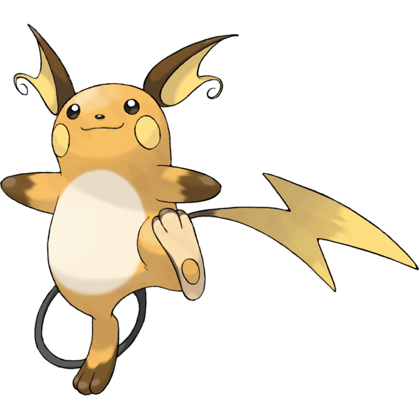
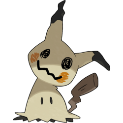
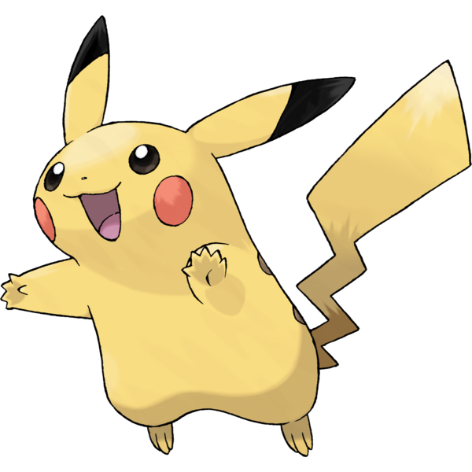

Pikachu Themed Website
This is a pikachu themed websites. Feel free to look around and explore! your presence is very much appreciated.
Choose your pokemon!

Evolves from Pikachu when exposed to a Thunder Stone. All Pikachu in Alola will evolve into this form regardless of their origin. It is the final form of Pichu in the Alola region.

Pichu is a small, ground-dwelling rodent Pokémon with pale yellow fur. Its ear-tips, collar, and tail are black and angular.

A lonely Pokémon, Mimikyu is always covered by its disguise. It is unknown what Mimikyu's true appearance looks like.

Pikachu charges itself while sleeping overnight, though stress and a lack of sleep can affect this. It can release electric discharges of varying intensity.
"I want to take everything I learn, each day, and put it to use."
- Ash Ketchum
Liked my website?
Feel free to check out my other projects in my github!